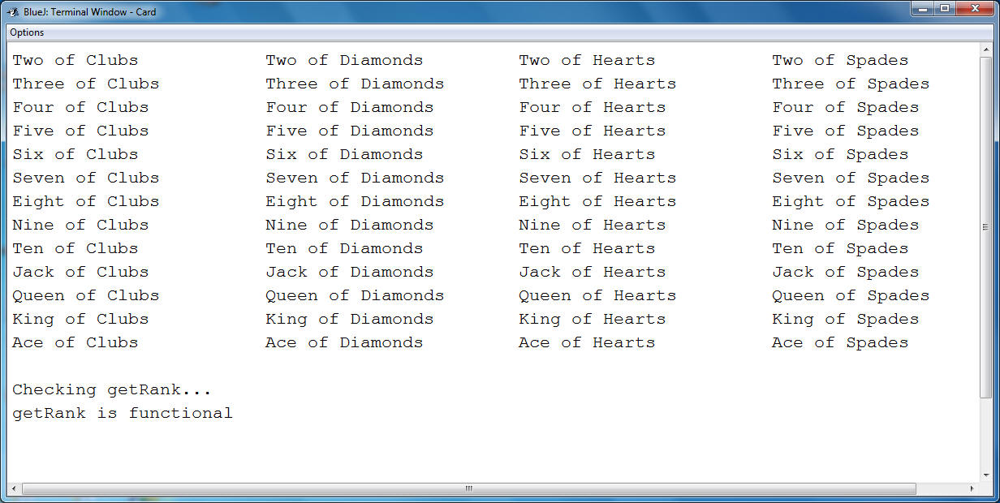

Card
We've created a class to represent an ace of spades, but now it's time to make a class that could represent any card that we want.
Create a new class named Card, which will have two String instance fields, the value and the suit.
The Card constructor should take in a single String as a parameter. This String will be exactly two characters long and the first character will be the code for the value and the second character will represent the suit. For example: "AS" would be the Ace of Spades, "4D" would be the Four of Diamonds, and "TC" would be the Ten of Clubs.
For those that don't know all the playing cards:
Values: Ace, Two, Three, Four, Five, Six, Seven, Eight, Nine, Ten, Jack,
Queen, King
Suits: Clubs, Diamons, Hearts, Spades
For Ten, Jack, Queen, King, and Ace, the single character representation is the first letter, but for all the numbers (except Ten) the character will simply be the number it represents.
| A Note About the Instance Fields: At some point during this program you are going to have to take the single-character version of the value/suit and turn it into the full String version. There are two options: 1) Simply store the single character version as the instance field, and then convert to the full String version when it comes time to find the value/suit 2) Use the construtor to determine and Store the full String version, and then simply refer to that variable when you want the full Sting version. Both are acceptable and neither really requires more work than the other. You choose. The only thing that is very important is that you DO NOT USE 52 IF STATEMENTS TO DETERMINE YOUR VALUE/SUIT. Break the two character String apart and use a 13 part if statement for the value, and then a different 4 part if statment for the suit. It still isn't a lot of fun, but 17 is much less than 52. Strategy: First declare a String named value and don't assign anything to it String value; Then use a 13 part else-if chain. Each part should assign a string into value: value = "Ace"; To appease the compiler, you must make sure that you use a complete chain with an if, several else ifs, and an else. If you don't have an else at the end, the compiler will think that you are not assigning a value in all cases. You will get the error: value may not have been initialized. You many use a switch statement if you already know what it is, but if you don't please use if statements. |
Accessor Methods:
String getSuit(): Returns the full String version of the suit ("Clubs" instead of "C")
String getValue(): Returns the full String version of the value ("Two" instead of "2")
String toString(): Returns the combination of the value and the suit as one String ("Ten of Hearts")
int getRank(): Returns an int that represents the 'rank' of the Card. This will be used later in the year, but the ints go as follows. Any of the numbers return a rank that is themselves. "Two" would return a 2, "Three" a 3, etc. Jack, Queen, King, and Ace return 11, 12, 13, and 14, in that order.
Testing
Test your methods with the following method. It has two parts: First it creates and prints every single card in columns by suit, and then it checks the ranks of all the cards to make sure they're accurate. If the rank is off it will return the rank that it should have returned. If you've done it perfectly, it will print "getRank is functional"
Your class must import java.util.ArrayList in order to function
import java.util.ArrayList;
public class CardTester
{
public static void main()
{
String[] suits = {"C","D","H","S"};
String[] vals = {"2","3","4","5","6","7","8","9","T","J","Q","K","A"};
ArrayList< Card > cards = new ArrayList< Card >();
for( int v=0; v < vals.length;v++)
{
for( int s=0; s < suits.length;s++)
{
cards.add(new Card(vals[v]+suits[s]));
}
}
for( int i =0; i< cards.size(); i++)
{
System.out.print(cards.get(i)+" \t");
if( i%4==3)
System.out.println();
}
System.out.println("\nChecking getRank...");
boolean allGood = true;
for( int i = 0; i < vals.length; i++)
{
Card c = new Card(vals[i]+"S");
int rank = c.getRank();
if( rank != i+2)
{
System.out.println(c+" returned a rank of "+rank+" when it should have returned a "+(i+2));
allGood = false;
}
}
System.out.printf("getRank is %sfunctional",allGood?"":"not ");
}
}

More Accessor Methods:
public String getColor()
This method will return a String that represents the color of the Card. The Spades and the Clubs will return "black" while the Hearts and Diamonds will return "red".
public boolean isFaceCard()
In Card games the Jack, Queen, King are considered face cards. Add a method named isFaceCard, which takes in no paramters and returns a boolean value. If the card is a Jack, Queen, or King it should return true. All other cases should return false.
public boolean isSameSuit(Card other)
This method will return true if this Card and the parameter Card have matching suits
public boolean isSameColor(Card other)
This method will return true if this Card and the paramter Card are the same color
public boolean equals(Card other)
This method returns true if the two cards have the same value and suit.
Create a Runner:
Create a Runner that will prompt the user to enter a two-string code, such as "4D" and use a Scanner to get the input. The runner should then construct four Card objects: An Ace of Spades, a Six of Diamonds, a King of Hearts, and whichever Card the user entered. Each thing that you print out should be the result of calling one of the methods above. Don't manually calculate the color of the card when you already have a getColor method built into the Card class.
The runner should then print out if the user's Card:
- The Color of the user's Card
- If the user's Card is a Face Card or not
- if the user's Card has the same color as the Six of Diamonds
- if the user's Card has the same suit as the King of Hearts
- if the user's Card is equal to the Ace of Spades
So an example might be:
Please enter a Card:
TH
The Ten of Hearts is a red card.
It is not a face card.
It is the same color as the Six of Diamonds
It is the same suit as the King of Hearts
It is not equal to the Ace of Spades
Or a second example:
Please enter a Card:
AS
The Ace of Spades is a black card.
It is not a face card.
It is not the same color as the Six of Diamonds
It is not the same Suit as the King of Hearts
It is equal to the Ace of Spades
Resist the urge to println in every section of an if-else. Below is two ways of printing our if the two Card objects userCard and aceOfSpades are equal. For this runner, stick to the style on the left, which uses a variable and a Single println, instead of the right, which has two different printlns.
String isEqual; if( userCard.equals(aceOfSpades) ) isEqual = " is "; else isEqual = " is not "; System.out.println(userCard + isEqual + " equal to the "+ aceOfSpades); |
if( userCard.equals(aceOfSpades) ) System.out.println(userCard + " is equal to the "+ aceOfSpades); else System.out.println(userCard + " is not equal to the "+ aceOfSpades); |
Self Painting Cards:
Now we're going to add the ability for each Card to be viewed on a SaccoWindow. It's going to need some fields to help draw an image of a Card in the right place.
Modifications to the Card class:
- Add instance filelds x,y,width, and height. In the constructor, leave the x and y at (0,0), but make the width 71 and the height 96.
- Add the basic accessor methods getX() and getY()
- Add the mutator method void setXY(int tmpX, int tmpY)
Painting A Card Face:
Now that you have the other instance fields set up, let's make it so that we can draw a card's image.
Instance field:
- import sacco.*;
- Add a Picture as an instance field. This is an object that represents an image and can be painted on the SaccoWIndow using a Canvas object.
private Picture pic;
Loading the Image:
The constructor, which is already complex, will be in charge of putting the correct image into the Picture instance field. They are already in the sacco.jar, you just have to call the static method Picture.loadFromJar and give it the location of the picture in the jar.
For example, if the instance field is named pic, the following would load the King of Diamonds:
pic = Picture.loadFromJar("/cards/KD.png");
Luckily, all the Card images have the same location and naming style. The Ace of Spades is at "/cards/AS.png", and the Two of Clubs is at "/cards/2C.png". Since the location of the image is a String, use the parameter of the Constructor to create the proper path, and then use it to load the Picture from the jar. DO NOT USE 52 IF STATEMENTS. Generate the location using the parameter String.
Drawing the Picture:
- Add the paintSelf method, which should simply draw the image of the Card using the Canvas object. You may use the following if you change the variable names to match the ones that you use.
public void paintSelf(Canvas c)
{
c.drawPicture(pic,x,y,w,h);
}
Test your program with the Runner below. Again you don't have to understand it, but it should display every Card arranged in a circle:
import sacco.*;
import sacco.Canvas;
import java.util.ArrayList;
import java.awt.geom.*;
import java.awt.*;
import java.awt.Rectangle;
public class CardDisplay extends SaccoWindow
{
private ArrayList< Card > cardList = new ArrayList< Card >();
private double a,aV=2;
private final int CARD_WIDTH = 71, CARD_HEIGHT=96;
public CardDisplay()
{
String[] suits = {"C","D","S","H"};
String[] vals = {"2","3","4","5","6","7","8","9","T","J","Q","K","A"};
for(String s: suits)
for(String v: vals)
{
cardList.add(new Card(v+s));
}
circle(a);
}
public void circle(double startAngle)
{
int centerX = this.getWidth()/2 - CARD_WIDTH/2; //offset for default Card width
int centerY = this.getHeight()/2 - CARD_HEIGHT/2; //offset for default Card height
int radius = Math.max(85,centerY-20);
double dAngle = (double)360/cardList.size();
for( int i = 0; i < cardList.size(); i++)
{
double angle = i*dAngle+startAngle;
int x =(int)Math.round(centerX +radius*Math.cos(Math.toRadians(angle)));
int y = (int)Math.round(centerY -radius*Math.sin(Math.toRadians(angle)));
cardList.get(i).setXY(x,y);
}
}
public Shape getClip()
{
GeneralPath sub = new GeneralPath();
for(int i =0; i< cardList.size()/6; i++)
{
Card c = cardList.get(i);
sub.append(new Rectangle(c.getX(),c.getY(),CARD_WIDTH,CARD_HEIGHT),false);
}
Area toRet = new Area(new Rectangle(0,0,getWidth(),getHeight()));
toRet.subtract(new Area(sub));
return toRet;
}
public void paintWindow(Canvas brush)
{
Shape clip =getClip();
for( int i = 0; i < cardList.size(); i++)
{
if( i >cardList.size()/2)
brush.setClip(clip);
cardList.get(i).paintSelf(brush);
}
brush.setClip(null);
}
public void onTimerTick()
{
circle( a += aV);
}
public static void main()
{
CardDisplay c= new CardDisplay();
c.showWindow();
c.start();
}
}